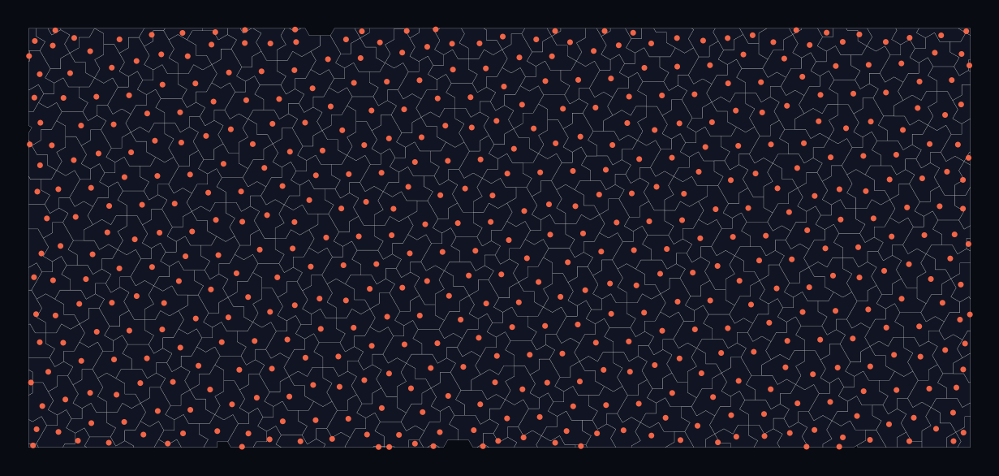

Signal processing and imaging
Deterministic non-periodic sampling layouts for reconstruction and sensor geometry.
Between the grid and the dice roll
Regular sampling aliases: any signal content near the lattice frequency folds into artifacts. Random sampling trades aliasing for noise and loses reproducibility. Aperiodic monotile layouts offer a third option with a genuinely different spectrum — the quasicrystalline diffraction structure of monotile tilings means sharp spectral features but no periodic lattice to beat against.[6]

Recent work on 2D histogram binning shows the practical direction: non-square binning geometries materially change what structure an analysis can resolve.[27] Tile centroids, edges, and adjacency graphs from a generated patch provide deterministic, reproducible sampling frames for the same kind of experiments in reconstruction, denoising, and compression. Mordret and Grushin demonstrate the payoff in simulated sensor arrays: Hat-family monotile layouts beat tested periodic and aperiodic baselines for spatial sampling and aliasing resistance.[37]
Experiment directions
- Sampling theory: compare monotile centroids against grids, jittered grids, blue noise, and Penrose point sets in reconstruction benchmarks
- Sensor arrays: radar, sonar, MRI, and CT geometry studies where periodic element spacing creates grating lobes[19][37]
- Phased arrays: simulated Hat layouts achieve low grating lobes and high aperture efficiency in limited-scan beamforming studies[38]
- Compressed sensing: deterministic non-periodic measurement patterns with stable addressing
- Anti-aliasing masks and halftone screens; see Moiré and aliasing
See also
Moiré and aliasing, Waves, acoustics, and photonics
Categories: Research frontiers